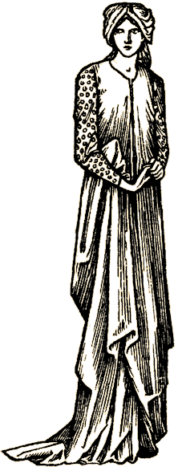

Disguises When Everybody Knows Your Name
Recognizing people is a problem in games. This is especially true in graphical games, where you only have a dozen or so types of bodies and dress to chose from. It’s really impossible to tell that your best friend just passed you in the tavern, since he looked like forty other people that you aren’t nearly as fond of, and don’t care to accost at random. This is not conducive to fostering a community.
Text games automatically solve the problem by simply describing the person walking past you by their name.
That works fine. I don’t have the foggiest idea what Zhenia looked like, but at least I knew exactly who it was who raced by me if I ever met her before. Problem of recognition solved. And this is great, because it’s much easier to know when you’ve stumbled across a friend, and you can then go chasing after them.
However, in the real world we don’t all wear badges on our chests. I wish you all would, since I forget a name less than a full second after it’s told to me.... But you don’t. And sometimes you don’t want people to know you.
Uses for Disguise
There are times when the need for disguise might arise. After all, few of the greatest [or worst] criminals of our time chose to walk out in public, flaunting their deeds and misdeeds for everyone to see – and I’m sure the majority would agree that’s a mighty fine way of getting caught. Most of you aspiring thieves out there would probably prefer to have your identity kept a secret while you’re “on the job,” so to speak.
Anyone can attempt to disguise themselves; it’s hardly exclusive to thieves. Skotos’ game system is based on skill, not occupation, so anyone can learn anything they like. This gives opportunity for the less obvious uses for disguise, such as attending the Masquerade Ball; impersonating the Duke to soil a plot on his life; and avoiding that whole ugly misunderstanding regarding a certain murder….
Skillful Disguise
Attempt? Well, yes. It’s a skill, and it becomes easier the less specific the disguise you wish to create. So, if you want to disguise yourself as a castle guard, and can get the uniform of the castle guard, your chance at success should be very good. Assuming you don’t have green hair or are 3’2" or something else clearly unlike a castle guard, you should be able to pass yourself off as a nondescript nameless guard.
SkotOS looks at you, and evaluates how well you disguised yourself. Then, as you encounter other players and non-players, SkotOS checks against other observers’ perception to determine if they see you as you wish to present yourself, or to what degree they see through your disguise. Responses to your disguise might range from:
| Full Success: |
There is a long carpeted corridor with a large pair of doors. A guard is standing near the left door. |
| Very Minor Failure: |
There is a long carpeted corridor with a large pair of doors. An unkempt guard is standing near the left door. |
| Minor Failure: |
There is a long carpeted corridor with a large pair of doors. An uncomfortable looking guard is standing near the left door. |
| Clear Failure: |
There is a long carpeted corridor with a large pair of doors. Someone dressed as a guard is standing near the left door. |
| Fumbled Attempt: |
There is a long carpeted corridor with a large pair of doors. Marty the Mouflon Herder dressed as a guard is standing near the left door |
Passing yourself off as the Queen of England would be numerically harder, but basically the same.
Just as with your guard’s costume, the viewer’s ability to see through your Queen of England disguise would be influenced by:
- their familiarity with what you are trying to disguise yourself
- I’ve never met the Queen, personally
- I’m her dress maker, and know her very well
- their familiarity with you
- he’s my own brother
- I’ve never seen this man [woman] in my life
- your success in executing your disguise
- how proper is your attire for the task?
- did you steal one of her dresses?
- how well does it fit?
- their own skill with disguise
- and their own general perceptiveness
Except for some simple response from the SkotOS on how well you think your disguise effort went, you will not be aware of how others see you except by their actions. But that’s the chance you take. And who knows? You just might pull it off....
|